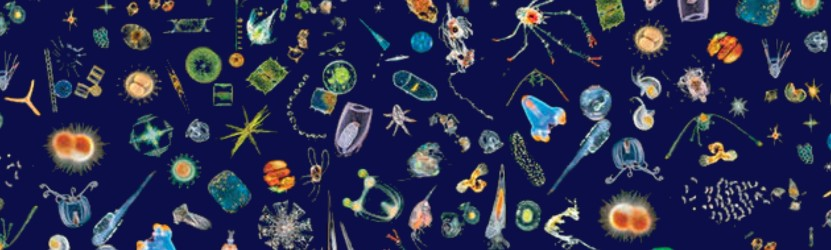
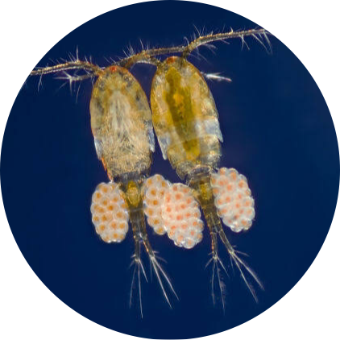
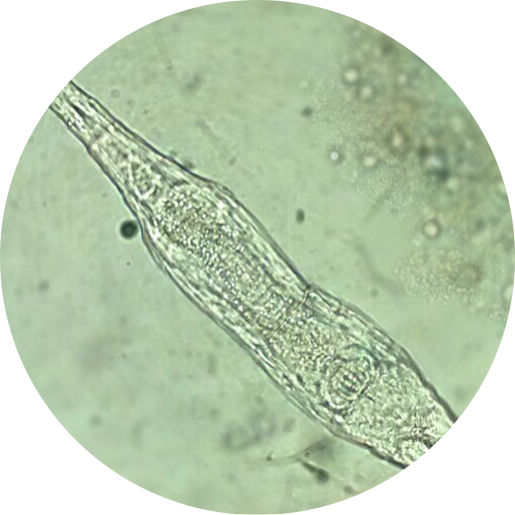
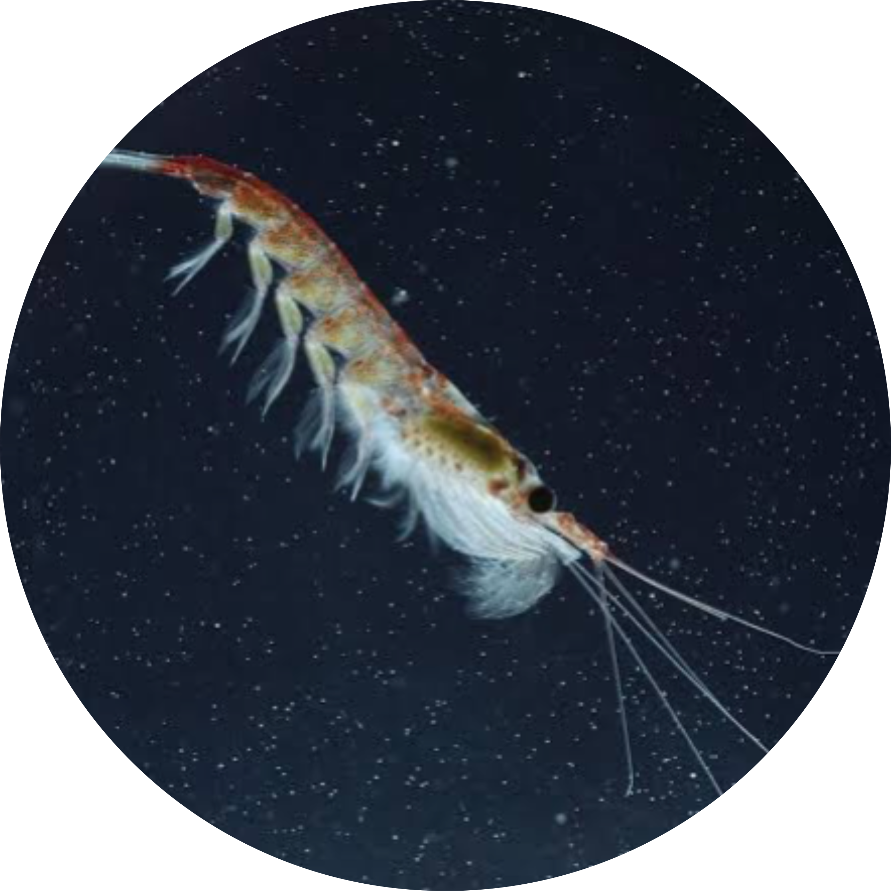
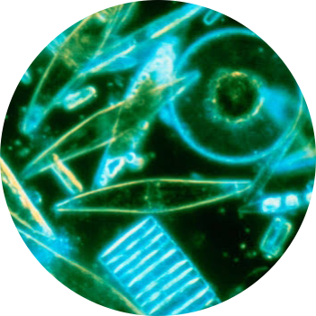

Fitoplânctons e Zooplânctons
Zooplânctons: O que são?
O zooplâncton, constituído por organismos que habitam as águas marinhas e dulcícolas em estado de flutuação, é uma faceta do plâncton. Seu nome tem origem no grego, onde "zoon" significa animal e "planktos" remete à deriva, assim traduzido como "animais à deriva". É crucial recordar que o plâncton compreende os microrganismos que integram os ecossistemas aquáticos, podendo se dividir em zooplâncton e fitoplâncton.
Características e Espécies do Zooplâncton
O zooplâncton é composto por uma vasta variedade de organismos. Dentre eles, destacam-se os protozoários, vermes, crustáceos e larvas de insetos. No entanto, as larvas de insetos, embora façam parte do zooplâncton, são raramente avistadas.
Há diferenças entre o zooplâncton marinho e o de
água doce. Nos ambientes marinhos, há uma maior predominância de seres invertebrados, enquan-
to o zooplâncton de água doce é caracterizado por uma menor diversidade de espécies. 
Em geral, o zooplâncton se alimenta de fitoplâncton e bactérias, desempenhando o papel de consumidores primários nos ecossistemas aquáticos. Por sua vez, são fonte de alimento para diversos outros organismos, incluindo os peixes.
Devido à sua diversidade de espécies, o zooplâncton exibe uma série de características distintas.
Protozoários
Os protozoários são organismos unicelulares e simples. Os principais grupos encontrados no plâncton pertencem aos filos Ciliophora e Sarcomastigophora, abrangendo os ciliados, flagelados e sarco-
dinas, em sua maioria de vida livre.
Sua alimentação é diversificada, podendo incluir  bacteriófagos (que se alimentam de bactérias), detritívoros (que consomem matéria orgânica em decomposição), herbívoros, carnívoros e até canibais.
Esses organismos desempenham um papel crucial na reciclagem da matéria orgânica, fragmentando-a em partículas menores que podem ser consumidas por outros membros do zooplâncton, como os rotíferos e microcrustáceos.
bacteriófagos (que se alimentam de bactérias), detritívoros (que consomem matéria orgânica em decomposição), herbívoros, carnívoros e até canibais.
Esses organismos desempenham um papel crucial na reciclagem da matéria orgânica, fragmentando-a em partículas menores que podem ser consumidas por outros membros do zooplâncton, como os rotíferos e microcrustáceos.
Os rotíferos são organismos microscópicos que exibem uma ampla gama de tamanhos e formas corporais. Durante muito tempo, foram agrupados com as lombrigas, mas atualmente são classifi-
cados no filo Rotifera. Quanto à sua dieta, os rotíferos podem ser onívoros, herbívoros ou carnívoros. Em habitats de água doce, os rotíferos tendem a apresentar a maior diversidade de espécies em comparação com outros componentes do zooplâncton. Do ponto de vista ecológico, os rotíferos desempenham um papel fundamental como fonte de alimento para os peixes em estágio larval.
Os crustáceos que compõem o zooplâncton se dividem principalmente nos grupos dos copépodes e cladóceros, frequentemente denominados de microcrustáceos, dada sua pequena estatura. Com cerca de 12.000 espécies, os copépodes representam o grupo mais diversificado dentre os crustáceos, podendo ser encontrados em ambientes de água doce e salgada. Eles exibem uma ampla variedade de dietas, podendo se alimentar de plantas (herbívoros), de tudo (onívoros), de outros animais (carnívoros) ou de matéria em decomposição (detritívoros). Por sua vez, os cladóceros, em sua maioria encontrados em ambientes de água doce, se alimentam de uma mistura de matéria orgânica, fitoplâncton e bactérias, contribuindo para a complexa teia alimentar dos ecossistemas aquáticos.
Diferentemente do zooplâncton, o fitoplâncton é constituído por algas microscópicas unicelulares que  realizam fotossíntese nos ecossistemas aquáticos, sendo considerado a componente vegetal do plâncton. Enquanto isso, o zooplâncton é composto pela fauna aquática em sua forma animal. As algas dinoflageladas e as diatomáceas são os grupos mais abundantes e representativos do fitoplâncton, desempenhando papéis essenciais na produção primária e
na cadeia alimentar dos ambientes aquáticos.